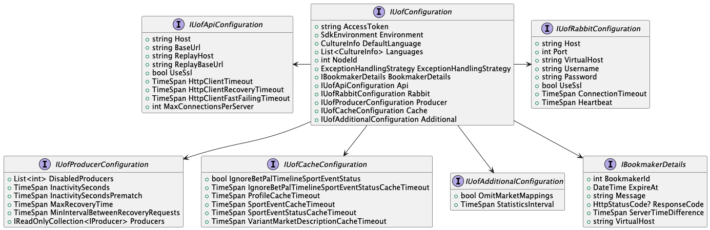

UofConfiguration
Before the SDK can connect to the feed and starts processing messages it has to be properly configured. The configuration must contain various information from the access token used to authenticate with the feed to various user preferences like default language, supported languages, etc.
The configuration uses a builder pattern enabling the user to set mandatory values while allowing them to skip optional ones. Various builders are used to create different configurations which target different environments:
- Staging & Production environment: configuration for both staging and production environments is built using the IConfigurationBuilder.
- Replay server: configuration for the replay server is built using the IReplayConfigurationBuilder.
- Non-sportradar environment: Sometimes (especially for testing) it can be useful to connect to a locally hosted server. Configuration for the custom environment can be built using ICustomConfigurationBuilder.
Refer to Sdk configuration for more information.
The SDK supports both in-code and file-based (external) configurations. The config file-based configuration should be used in most cases because it improves code readability.
Interface structure for configuration
The following links will lead you to the respective class articles. Each article has three sections consisting of a class/interface description, method summary, and methods details.
IUofConfiguration Diagram
